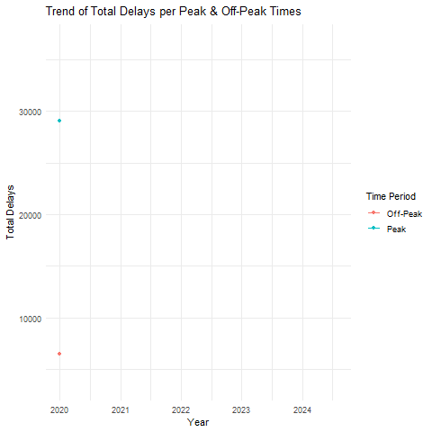

Untitled
Motivations and Importance of Analysis
We wanted to analyze borough-specific data to identify key subway challenges by combining ridership, delays, and safety metrics. Higher ridership often leads to increased delays, particularly in congested areas like Manhattan. Exploring the connection between delays and safety incidents revealed that recurring issues, such as track problems, impact both reliability and safety. Seasonal factors, like winter weather, further highlighted how external conditions affect system performance.
Quantitative Findings and Their Qualitative Insights
High ridership correlates with longer delays and increased safety risks, particularly during peak hours. Track-related issues emerged as a common cause of disruptions, emphasizing the need for preventive maintenance. Seasonal trends showed winter reducing system reliability, while other months performed better. Post-COVID patterns revealed shifting passenger habits and service gaps, particularly on busy lines.
Importance of This Analysis
By connecting ridership, delays, and safety, we uncovered critical issues like infrastructure strain, and seasonal impacts. These insights support targeted improvements, better maintenance, resource allocation, and weather-specific strategies to enhance reliability, safety, and rider experience. This analysis demonstrates how combined metrics drive meaningful, system-wide improvements.
NYC Subway Incident, Performance, and Ridership Analysis Incidents & Safety Concerns
To address the motivating question regarding incidents and safety concerns, data was analyzed to identify the most common incident categories reported during and post-COVID. By categorizing incidents (e.g., mechanical issues, safety hazards, assaults, or overcrowding) across NYC subway lines, trends were identified from 2020 to 2024. Preliminary results revealed a sharp increase in safety-related incidents (e.g., assaults and disturbances) during the COVID period (2020-2021) as ridership fell and enforcement protocols shifted. Post-COVID (2022-2024), the data highlights an uptick in overcrowding-related incidents as ridership recovers, though safety incidents remain elevated compared to pre-pandemic baselines. Temporal trends indicate that incidents were most frequent during evening rush hours, suggesting operational challenges in peak periods.
Subway Performance
To assess subway line performance, metrics such as on-time performance, delays, and wait times were analyzed for peak and off-peak hours. The analysis identifies lines with the best performance (e.g., lines with minimal delays and high punctuality) and those with frequent disruptions. From 2020 to 2024, performance trends reveal a decline in delays during the COVID period (2020-2021) as ridership dropped. However, delays increased post-COVID (2022-2024) as ridership returned, particularly on lines serving dense boroughs like Brooklyn and Queens. Terminal on-time performance showed consistent improvement during COVID but deteriorated post-recovery. Comparisons between 2020-2021 and 2022-2024 indicate recovery efforts have been uneven, with some lines struggling to return to pre-pandemic punctuality levels.
Ridership
The relationship between ridership and wait assessment was analyzed to determine whether higher ridership correlates with increased wait times or complaints. During COVID, reduced ridership coincided with improved wait assessment scores, as fewer passengers alleviated operational strain. Post-COVID recovery data (2022-2024) highlights a clear trend: subway lines with higher ridership experience longer wait times and more complaints, particularly during peak hours. This correlation underscores the need for capacity planning and infrastructure investment to accommodate returning riders while maintaining service reliability.
Overall, these analyses provide insights into incident patterns, performance trends, and ridership dynamics, aiding in targeted improvements to subway operations and safety measures during NYC’s post-COVID recovery.
Key Findings and Insights
Comparative Analysis: COVID vs. Post-COVID Incident Distribution


To ensure a balanced analysis, both the COVID (2020-2021) and post-COVID (2022-2023) periods are scaled to two years each. Pie charts will illustrate the distribution of incident categories for each period. During the COVID period, signal-related incidents were most prevalent, comprising 33.2% of all incidents, followed by persons on trackbed/police/medical incidents at 30.2%. Other notable categories included track-related incidents (10.8%), subway car incidents (8.9%), and a smaller share for stations and structure (5.7%). These distributions highlight the operational challenges of maintaining reliability and addressing immediate safety concerns during the pandemic.
Post-COVID, the distribution shifts significantly. Persons on trackbed/police/medical incidents rose to 33.6%, becoming the largest category, while signal-related incidents decreased to 24.6%. Track-related incidents surged to 18.2%, reflecting emerging infrastructure maintenance challenges. Categories such as subway car (8.0%), stations and structure (8.8%), and other (6.8%) incidents showed relatively smaller changes. These shifts indicate evolving priorities for MTA as the system transitions to a recovery phase, emphasizing the need for focused interventions to address rising safety and infrastructure issues.
Please got to this link for more detailed analysis about MTA Incidents.
Analysis of MTA Subway Line Performance: Peak vs. Off-Peak Delays

The analysis of subway delay trends, comparing the COVID (2020-2021) and Post-COVID periods, highlights significant changes in the performance of various subway lines. The animated bar chart offers a visual comparison of total delays for each subway line across these two timeframes. As the animation shows, delays generally increased for most subway lines, especially as New York City began to reopen. Certain lines, such as the N, F, 6, and A, experienced substantial increases in delays, with some nearly doubling. For example, delays on the N train surged from 60,073 to 100,434 after the pandemic, marking a 67.19% increase. Similarly, the 6 train delays rose from 41,200 to 98,141. This suggests that while delays were reduced during the shutdown, the return to full service and higher ridership in the post-pandemic period has led to an uptick in disruptions.

Furthermore, an animated line plot was created to show how total delays changed month by month for both peak and off-peak periods. The plot revealed several trends, including a significant drop in delays during the early months of 2020, followed by a surge in delays as the city reopened and ridership increased. First quarter of 2020 saw a significant drop in delays due to the NYC shutdown in response to the COVID-19 pandemic. Mid-2021 marked the highest surge in delays, coinciding with the city’s phased reopening and increased ridership.
Please got to this link for more detailed analysis about MTA Delays.
Relation to Prior Work
The MTA’s annual performance metrics reports play a crucial role in evaluating the effectiveness of its public transportation services. By using benchmarking techniques, the MTA compares its performance against peer agencies, which helps identify best practices that can be implemented to improve operational efficiency and cost-effectiveness. These performance metrics are made publicly available to ensure transparency and are submitted to oversight agencies such as the Federal Transit Administration (FTA), while also being included in the National Transit Database. This openness supports accountability and enables stakeholders to assess the MTA’s service delivery.
Our group’s work builds directly on this foundation by analyzing incident categories and trends, which aligns with the MTA’s commitment to using data for continuous service improvement. Our focus on incident trends, particularly post-COVID, offers more detailed insights that complement the broader performance metrics reported in the MTA’s annual reports. By focusing on the shifts in incidents during and after the pandemic, we shed light on the evolving operational challenges the MTA faces, such as issues related to maintenance, safety, and service capacity. Our analysis not only contributes to understanding the impact of these trends but also provides valuable context to help guide future decision-making within the organization.
Potential Next Steps: Impact of Economic Shifts and Policy Changes
To better understand subway performance, it’s important to explore how socio-economic factors like economic shifts and policy changes affect the system. Economic fluctuations, such as recessions or periods of growth, can influence ridership patterns, fare revenue, and overall demand for transit. For example, during economic downturns, people may rely more on public transportation due to job losses, whereas growth periods might see increased commuter traffic and higher demand.
Policies at local, state, and national levels—such as funding, subsidies, and zoning regulations—also play a critical role in shaping subway service and infrastructure. Increased funding can lead to improved services, new lines, and better maintenance, while budget cuts or shifts in favor of other transportation options could negatively impact the system. Examining the role of these policies will offer insights into the long-term viability of subway operations and guide future investment decisions.
Pre-Pandemic Trends and Long-Term Patterns
It’s crucial to analyze subway performance before the pandemic to establish a baseline for comparisons. Historical data can highlight long-term performance trends, identifying recurring issues with specific lines or infrastructure challenges that pre-date COVID-19. This analysis helps distinguish between problems caused by the pandemic and those that have been ongoing. By recognizing these patterns, more accurate projections for post-pandemic recovery can be made, enabling transit authorities to address long-standing issues while managing new challenges.
Variations Across Subway Lines and Boroughs
Further research should explore performance differences across subway lines and boroughs. Factors like infrastructure quality, line age, and service frequency affect service consistency. Older subway lines or those with outdated infrastructure tend to experience more maintenance issues and delays. Identifying these disparities allows for targeted solutions, such as infrastructure upgrades, more frequent service on high-demand routes, or new trains for aging lines. Additionally, evaluating the effects of recent fare increases on ridership, revenue, and service quality will provide valuable insights into the subway system’s financial health and its ability to maintain high-quality services.